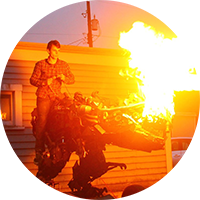
Projects
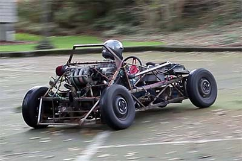Hammerkart
The Hammerkart is a 640lb, nearly 200hp go kart. The engine was liberated from a junkyard and once lived in a front-wheel drive Infiniti G20. This SR20 powered deathsled is unencumbered by bourgeois luxuries like suspension or floor panels, and never fails to make you grin ear to ear. The EFI system is currently based on a Megasquirt 1, but a fully custom ECU is underway.
The Hammerkart is a 640lb, nearly 200hp go kart. The engine was liberated from a junkyard and once lived in a front-wheel drive Infiniti G20. This SR20 powered deathsled is unencumbered by bourgeois luxuries like suspension or floor panels, and never fails to make you grin ear to ear. The EFI system is currently based on a Megasquirt 1, but a fully custom ECU is underway.
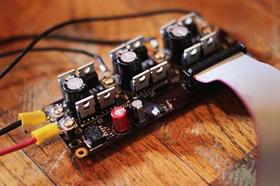Field-Oriented Brushless Servo Controller
Started as a computer science capstone project for my senior year at UPS, this controller drives off-the-shelf sensored hobby brushless motors as industrial servos to regulate torque, RPM, and position with stepper motor style input. A new version is currently being designed that can drive three servos with a single on-board STM32F4 processor.
Started as a computer science capstone project for my senior year at UPS, this controller drives off-the-shelf sensored hobby brushless motors as industrial servos to regulate torque, RPM, and position with stepper motor style input. A new version is currently being designed that can drive three servos with a single on-board STM32F4 processor.
Couch Trailer
My neighbor asked if I wanted to get rid of his couch. I said yes. I then added wheels, a trailer tongue, an e-brake for sick skids, and nearly got arrested for taking it for a spin around Green Lake.
My neighbor asked if I wanted to get rid of his couch. I said yes. I then added wheels, a trailer tongue, an e-brake for sick skids, and nearly got arrested for taking it for a spin around Green Lake.
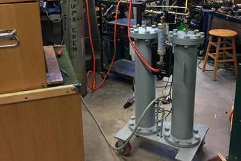Nitrogen Generator
Built for the UPS chem department to replace continuous replacement of nitrogen dewars to drive analytical equipment. This system uses computer controlled pressure-swing-absorption to filter the oxygen from compressed air and is currently delivering 24/7 nitrogen to multiple labs around campus.
Built for the UPS chem department to replace continuous replacement of nitrogen dewars to drive analytical equipment. This system uses computer controlled pressure-swing-absorption to filter the oxygen from compressed air and is currently delivering 24/7 nitrogen to multiple labs around campus.
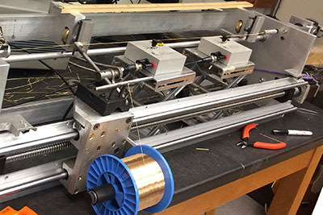String Winder
Built for a UPS physics faculty member for research on non-uniform guitar strings. This guitar string lathe winds guitar strings with a user-specified mass density. It can also calculate the pitch of the wound guitar string with a record player needle, and accurately measures the real mass-density.
Built for a UPS physics faculty member for research on non-uniform guitar strings. This guitar string lathe winds guitar strings with a user-specified mass density. It can also calculate the pitch of the wound guitar string with a record player needle, and accurately measures the real mass-density.
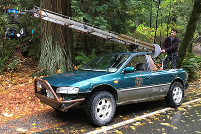Sketchy-ass camera car
When working at Freefly Systems, I got inspired by incredible footage and never-before-seen camera motion by Freefly customers from purpose-built camera cars. Sadly, to purchase these camera cars requires nearly four orders of magnitude more budget than I had, so I turned my Subaru into a camera car instead!
I've developed accessories for it as well - like a vibration-isolating arm that sticks on the end of the crane or into the front/rear trailer hitches.
Footage I shot with Mumukuba Productions from this crane was internet famous for a bit!
When working at Freefly Systems, I got inspired by incredible footage and never-before-seen camera motion by Freefly customers from purpose-built camera cars. Sadly, to purchase these camera cars requires nearly four orders of magnitude more budget than I had, so I turned my Subaru into a camera car instead!
I've developed accessories for it as well - like a vibration-isolating arm that sticks on the end of the crane or into the front/rear trailer hitches.
Footage I shot with Mumukuba Productions from this crane was internet famous for a bit!
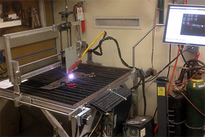CNC Plasma Cutter
This custom CNC plasma cutter uses an Everlast torch and is powered by LinuxCNC.
This custom CNC plasma cutter uses an Everlast torch and is powered by LinuxCNC.
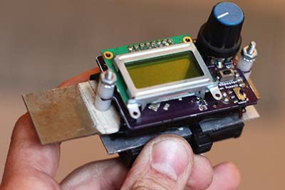Card Spoofer
Students around UPS want to let fellow students into their dorm building for group projects or to hang out in a lounge. Currently, a student has to physically give a peer their student ID card to let anyone in. Now, you can feel like you're in Mission-Impossible and use the cardspoofer to emulate the electromagnetic strip by only entering their student ID number.
Students around UPS want to let fellow students into their dorm building for group projects or to hang out in a lounge. Currently, a student has to physically give a peer their student ID card to let anyone in. Now, you can feel like you're in Mission-Impossible and use the cardspoofer to emulate the electromagnetic strip by only entering their student ID number.
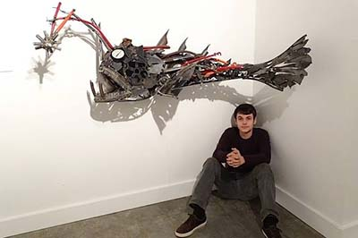Sculpture: Fish
I have a series of steel scrap sculptures built over the course of the last few years. This one is one of my favorites, and currently lives in a padio in Massachusetts.
I have a series of steel scrap sculptures built over the course of the last few years. This one is one of my favorites, and currently lives in a padio in Massachusetts.
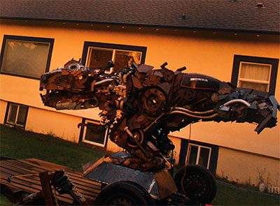Sculpture: Dino
The dino was built to clear out my ever increasing scrap pile in my garage. If you live in Tacoma, maybe you've seen it shoot fire at pedestrians from its onboard propane tank.
The dino was built to clear out my ever increasing scrap pile in my garage. If you live in Tacoma, maybe you've seen it shoot fire at pedestrians from its onboard propane tank.
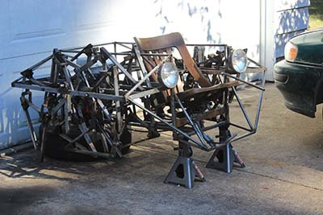Theo Jansen Walking Machine
This 12-legged walking machine was built after my senior year in high school and is powered by a 6hp cement mixer engine.
This 12-legged walking machine was built after my senior year in high school and is powered by a 6hp cement mixer engine.
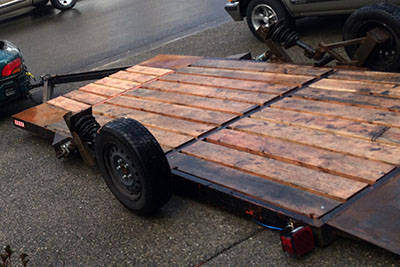Drop Trailer
Tilt trailers are a)difficult to load awkward loads, b)absurdly heavy, and c)absurdly expensive. This was designed and built out of necessity to carry heavy awkward loads out of my house. It uses bottle jacks to fully drop the trailer to the ground, and a winch to pull loads onto the bed.
Tilt trailers are a)difficult to load awkward loads, b)absurdly heavy, and c)absurdly expensive. This was designed and built out of necessity to carry heavy awkward loads out of my house. It uses bottle jacks to fully drop the trailer to the ground, and a winch to pull loads onto the bed.
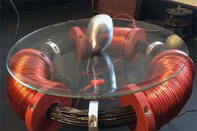Tesla Egg
The Tesla egg was one of Nikola Tesla's original demonstrations of A/C electricity. This was built as a display for the UPS science building. The solid aluminum egg spins on end when electric currents are induced throughout it.
The Tesla egg was one of Nikola Tesla's original demonstrations of A/C electricity. This was built as a display for the UPS science building. The solid aluminum egg spins on end when electric currents are induced throughout it.
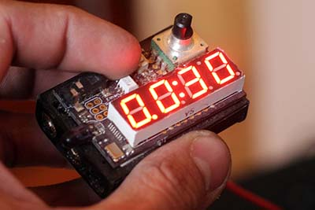Intervalometer
Powered by an Atmel AVR, this camera controller is designed to trigger Canon DSLRs through a 2.5mm stereo cable, or Nikon DSLRs with an infrared remote. It is perfect for long-exposure or time-lapse photography.
Powered by an Atmel AVR, this camera controller is designed to trigger Canon DSLRs through a 2.5mm stereo cable, or Nikon DSLRs with an infrared remote. It is perfect for long-exposure or time-lapse photography.
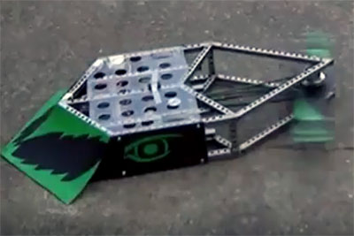Twist-O-Crunch
In my sophomore year in high school, a friend and I raised money on Kickstarter to build this 120lb battlebot for the 2011 Robogames.
In my sophomore year in high school, a friend and I raised money on Kickstarter to build this 120lb battlebot for the 2011 Robogames.